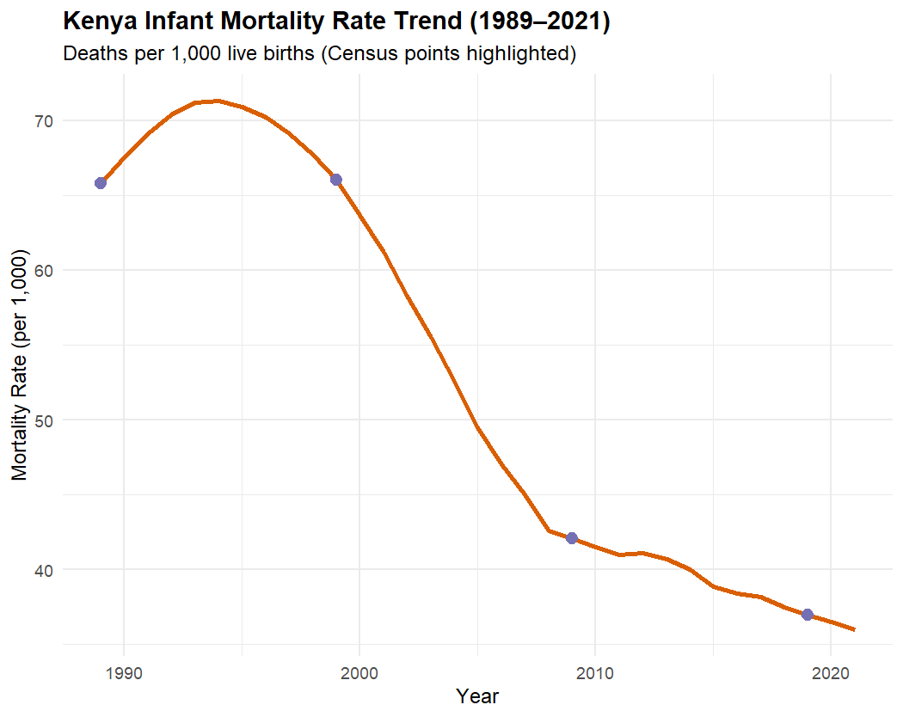
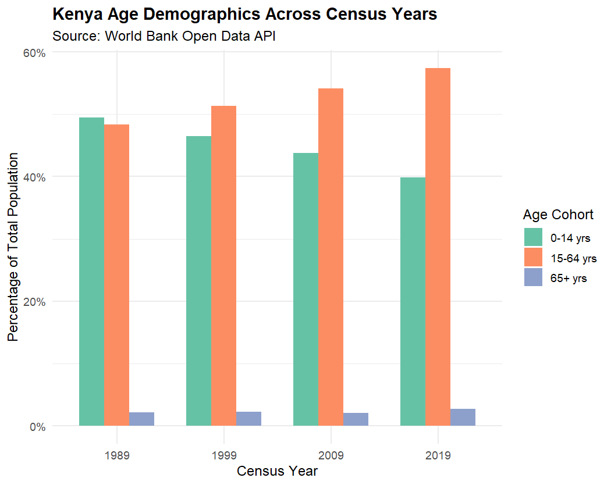
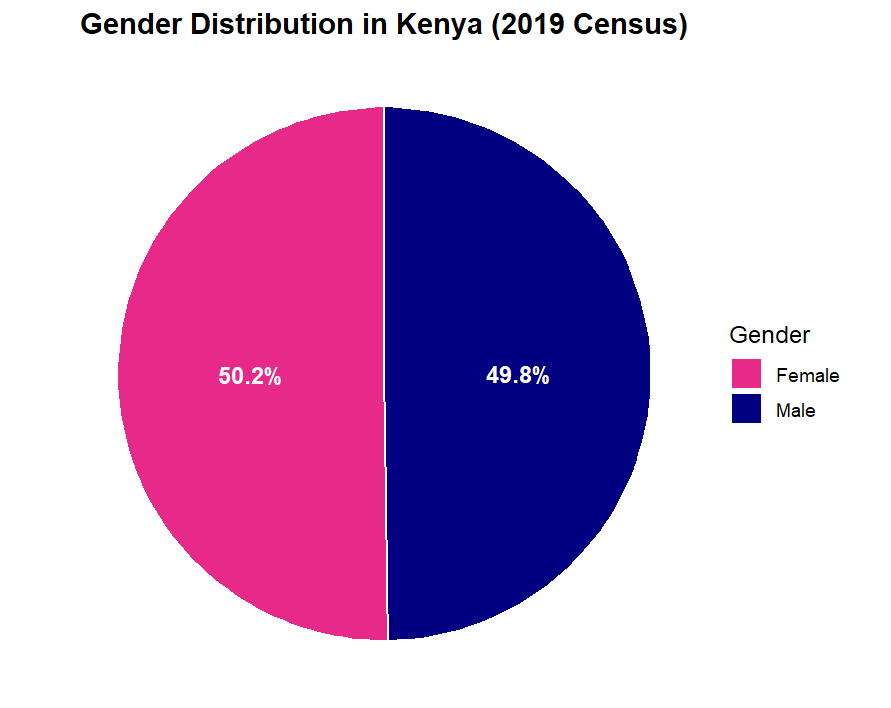

Web scraping (public datasets)

📌 Executive Summary
This automated, reproducible data extraction pipeline engineered in R, interfaces with the World Bank Open Data RESTful API (v2) using the {wbstats} package to query multi-decadal demographic time-series datasets for Kenya. The ingestion module dynamically retrieves structured JSON payloads for key macro-level metrics, including age cohort distributions, gender ratios, and infant mortality rates.
Instead of manually downloading spreadsheets, the R script automatically fetches updated numbers, processes demographic trends across major census years, and outputs visual charts with a single command.
Region of Interest: Kenya Time period: 1989 – 2021
🛠️ Technical Specifications
- Language & Core Libraries: R (
wbstats,tidyverse,scales) - Input Data: Open access data - WorldBank
💻 Data Transformation & Visualization Pipeline
-
ETL Engine: Leverages {tidyverse} (dplyr, tidyr) for tidy data transformation, performing vector-based calculations (absolute gender counts) and temporal filtering focused on standard census years (1989, 1999, 2009, 2019).
-
Automated Reporting: Uses {ggplot2} to generate parameterized summary outputs including age cohort bar charts, gender proportion breakdowns, and mortality trendlines; ensuring programmatic execution without manual spreadsheet manipulation.
-
Modular Integration: Designed as an independent ingestion micro-service. Data outputs (CSV/RData) serve as a standardized baseline layer, structured to seamlessly integrate with Phase 2 sub-national spatial join workflows
(e.g., KNBS ADM1/ADM2 county vector layers and WorldPop raster datasets).
R Workflow & Code Breakdown
Below is a snippet of code as structured in R.
Step 1: Call necessary libraries & initialize
You need to install the listed packages if not initially installed We call all necessary packages to allow function calling. We also point R to the working directory with file paths relevant to data, images and outputs.
# ------------------------------------------------------------------------------
# Call the necessary libraries after installation
# ------------------------------------------------------------------------------
install.packages(c("wbstats", "tidyverse", "scales"))
library(wbstats)
library(tidyverse)
library(scales)
# ------------------------------------------------------------------------------
# Define indicators for Kenya
# ------------------------------------------------------------------------------
wb_indicators <- c(
total_pop = "SP.POP.TOTL",
age_0_14 = "SP.POP.0014.TO.ZS",
age_15_64 = "SP.POP.1564.TO.ZS",
age_65_plus = "SP.POP.65UP.TO.ZS",
female_pct = "SP.POP.TOTL.FE.ZS",
male_pct = "SP.POP.TOTL.MA.ZS",
infant_mort = "SP.DYN.IMRT.IN"
)
# ----------- Fetch data directly via World Bank API (1989–2021)
kenya_raw <- wb_data(
country = "KEN",
indicator = wb_indicators,
start_date = 1989,
end_date = 2021
)
Step 2: Filter, Clean & Calculate Metrics
Knowledge of census years is paramount (i.e. expert/local knowledge of area of interest & index is needed when scraping public datasets). In this example, census is carrried out in Kenya every 10 years.
# ------------------------------------------------------------------------------
# Filter for key census years, clean columns and calculate statistics
# ------------------------------------------------------------------------------
census_years <- c(1989, 1999, 2009, 2019)
kenya_census <- kenya_raw %>%
filter(date %in% census_years) %>%
select(year = date, total_pop, age_0_14, age_15_64, age_65_plus, female_pct, male_pct, infant_mort)
# Calculate summary metrics table
kenya_summary <- kenya_census %>%
mutate(
female_pop = total_pop * (female_pct / 100),
male_pop = total_pop * (male_pct / 100)
)
print(kenya_summary)
Step 3: Visualization
# ------------------------------------------------------------------------------
# Visualize extracted data
# ------------------------------------------------------------------------------
# ----------- a) BAR CHART
age_data <- kenya_census %>%
select(year, `0-14 yrs` = age_0_14, `15-64 yrs` = age_15_64, `65+ yrs` = age_65_plus) %>%
pivot_longer(cols = -year, names_to = "Age_Group", values_to = "Percentage")
# Plot Grouped Bar Chart
ggplot(age_data, aes(x = factor(year), y = Percentage, fill = Age_Group)) +
geom_bar(stat = "identity", position = "dodge", width = 0.7) +
scale_fill_brewer(palette = "Set2") +
scale_y_continuous(labels = function(x) paste0(x, "%")) +
labs(
title = "Kenya Age Demographics Across Census Years",
subtitle = "Source: World Bank Open Data API",
x = "Census Year",
y = "Percentage of Total Population",
fill = "Age Cohort"
) +
theme_minimal(base_size = 12) +
theme(plot.title = element_text(face = "bold"))

# ----------- b) PIE CHART
# Extract 2019 gender breakdown
gender_2019 <- kenya_census %>%
filter(year == 2019) %>%
select(female_pct, male_pct) %>%
pivot_longer(cols = everything(), names_to = "Gender", values_to = "Percentage") %>%
mutate(Gender = ifelse(Gender == "female_pct", "Female", "Male"))
# Plot Pie Chart
ggplot(gender_2019, aes(x = "", y = Percentage, fill = Gender)) +
geom_bar(stat = "identity", width = 1, color = "white") +
coord_polar("y", start = 0) +
scale_fill_manual(values = c("Female" = "#e7298a", "Male" = "#000080")) +
geom_text(aes(label = paste0(round(Percentage, 1), "%")),
position = position_stack(vjust = 0.5), color = "white", fontface = "bold") +
labs(
title = "Gender Distribution in Kenya (2019 Census)",
x = NULL, y = NULL, fill = "Gender"
) +
theme_void(base_size = 12) +
theme(plot.title = element_text(face = "bold", hjust = 0.5))

# ----------- c) LINE GRAPH
# Plot continuous line chart using full raw time-series data
ggplot(kenya_raw, aes(x = date, y = infant_mort)) +
geom_line(color = "#d95f02", linewidth = 1.2) +
geom_point(data = filter(kenya_raw, date %in% census_years), color = "#7570b3", size = 3) +
scale_y_continuous(labels = scales::comma) +
labs(
title = "Kenya Infant Mortality Rate Trend (1989–2021)",
subtitle = "Deaths per 1,000 live births (Census points highlighted)",
x = "Year",
y = "Mortality Rate (per 1,000)"
) +
theme_minimal(base_size = 12) +
theme(plot.title = element_text(face = "bold"))
Summarized Logic steps
- API Connection: Query the World Bank Open Data API (
wbstats) to fetch Kenya's demographic time-series data (1989–2021). - Data Parsing: Extract target indicators: age cohorts (0–14, 15–64, 65+), gender percentages, and infant mortality rates.
- Temporal Filtering: Filter the full time series down to key national census benchmark years (1989, 1999, 2009, 2019).
- Feature Transformation: Calculate absolute gender counts and reshape wide data into tidy formats using
dplyrandtidyr. - Visualization Generation: Programmatically execute
ggplot2scripts to output age-structure bar charts, gender distribution breakdowns, and mortality trendlines. - Pipeline Structuring: Export structured tabular data and figures to serve as a baseline layer for sub-national GIS integration.
--- Tools Used
| Tool | Purpose |
|---|---|
| R | Initial load, organizing & cleaning, visualization |
📈 Practical Application
-
Automated Data Gathering: This script connects directly to web data servers to stream demographic indicators instantly.
-
Demographic Tracking: The generation of clear visual summary charts can be applied in time series analysis of demography trends within countries or even cities.
i.e. Showing how a country's age groups have evolved over time ensures targeted measures for the different ages.
-
Future-Ready Design: This automation can serve as "Phase 1" of a broader analytics engine.
While current outputs focus on national trends, a backend can be built to plug directly into future mapping software to visualize demographic shifts across a region or area of interest.